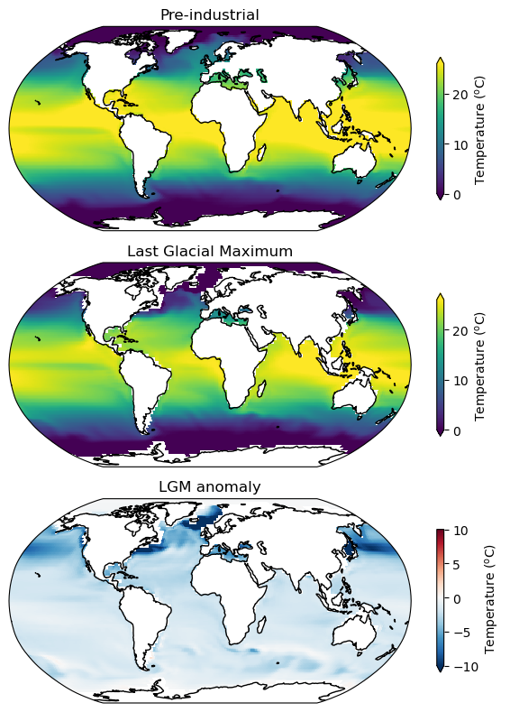
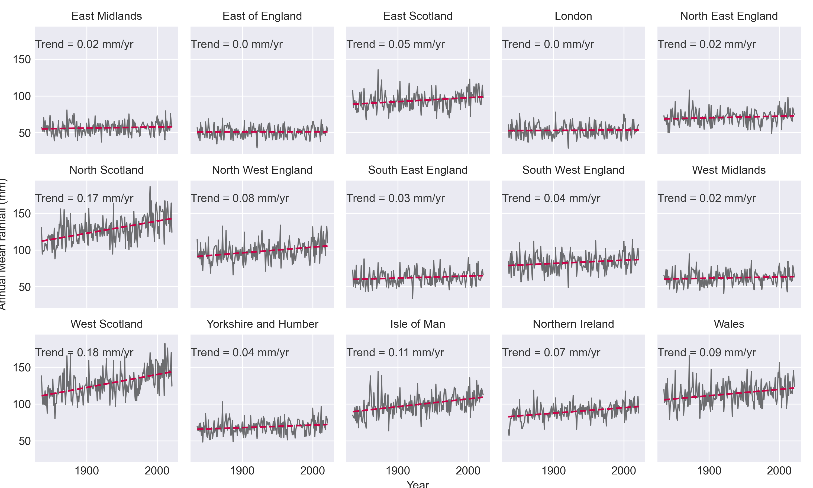

data science
mini-portfolio
Below are a selection of Jupyter Notebooks (in html format) showcasing some climate/environment data science exercises which I've worked on over the past few years. They're designed to be brief and intended to illustrate my coding and statistics skills.
- How cold was the ice age ocean? **click to open**
tags: netcdf; xarray; geospatial; climate model; CMIP - Time series modelling of UK rainfall data? **click to open**
tags: ARIMA; geopandas; time series modelling; Machine Learning;
Last modified: